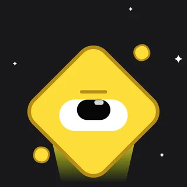
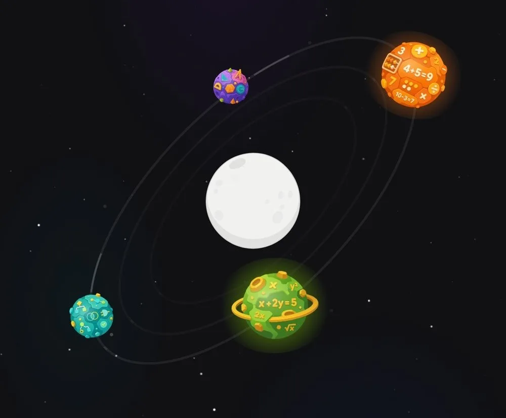
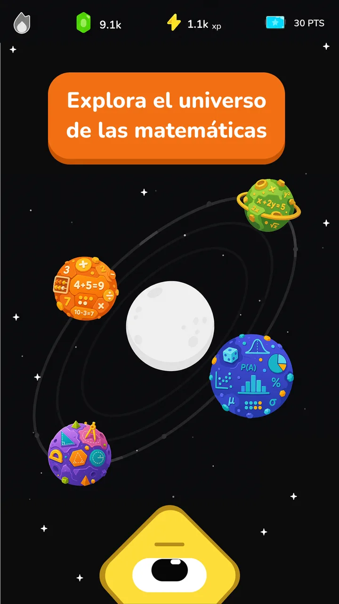
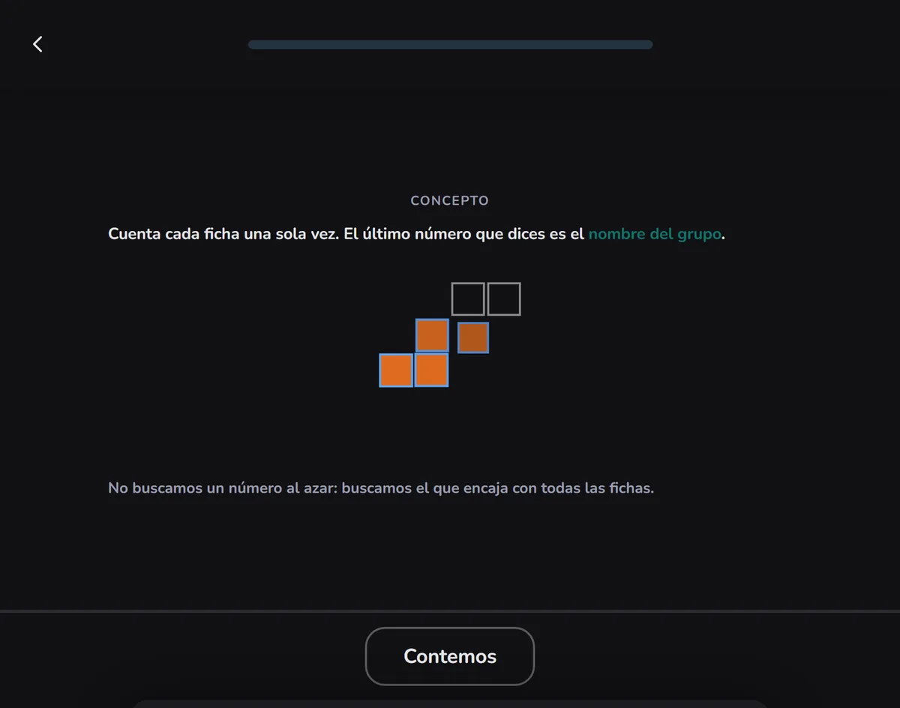
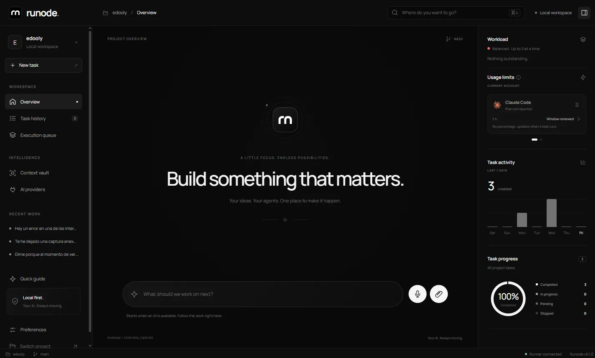
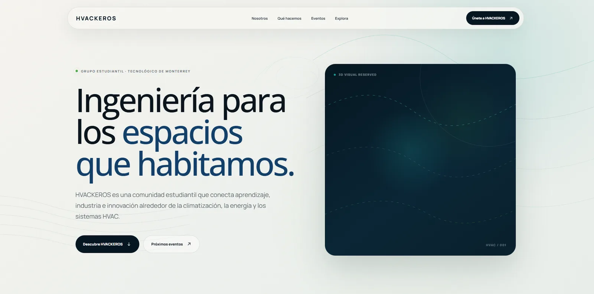

Tecnológico de Monterrey
Ingeniería en Robótica y Sistemas Digitales, 2026 – 2030
Monterrey, México. Abierto a oportunidades.
Construyo productos digitales completos: los pienso, los diseño, los programo, los despliego y los mantengo vivos. Mi proyecto principal es Edooly.
Estudio Ingeniería en Robótica y Sistemas Digitales en el Tecnológico de Monterrey. Empecé a construir software en 2024 con flujos de desarrollo asistidos por IA y desde entonces he llevado proyectos del primer boceto a producción.
Trabajo en todas las capas de un producto: decisiones de producto, diseño de interfaz, frontend, backend, bases de datos, servidores, despliegues y automatización. Aprendo lo que el proyecto pide, cuando lo pide.
Lo que más me importa es construir cosas con propósito: productos que ayuden de verdad a alguien.

Fundador, CEO y único desarrollador2024 – hoy
Una plataforma gamificada para aprender matemáticas en español. Es mi proyecto central: lo diseñé, lo programé y lo opero yo, desde el motor de lecciones hasta los pagos, los servidores y la app de Android.



Visuales matemáticas manipulables y preguntas guiadas, descritas como contenido estructurado. Validadores propios bloquean el build si una lección rompe el contrato.
Ligas semanales por divisiones con rivales calibrados, rachas con congelador, misiones, cofres, ruleta diaria y una economía de gemas con su libro contable.
Suscripción Premium con Stripe, tienda, sistema de energía y anuncios en la app.
Shell nativo con Capacitor publicado en Google Play, notificaciones push, inicio de sesión con Google y versiones verificadas antes de cada subida.
Servidor VPS con PostgreSQL en Docker, despliegues con verificación de salud, respaldos automáticos y diagnóstico de latencia en producción.
Embudo desde la instalación hasta la primera lección, recorrido de aprendizaje y Firebase Analytics para decidir qué mejorar con datos reales.
Cuando el producto necesitó algo que no existía, lo construí aparte.
Espacio de trabajo para el equipo de contenido: coordino a colaboradores que crean las lecciones de Aritmética, Álgebra y Geometría, con validadores y sincronización hacia la plataforma.
Genera videos verticales de ejercicios: guion con Gemini, validación matemática, voz con ElevenLabs y render con Remotion usando las visuales reales de Edooly.
Panel interno en Next.js, de solo lectura sobre producción, para entender el camino de cada usuario desde que abre la app hasta su primera lección.
Estudio local de imagen a video que orquesta GPUs en la nube y guarda cada corrida de forma reproducible.

Un centro de control de escritorio para agentes de programación con IA, como Claude Code y Codex. No trae su propio modelo: organiza las cuentas y los agentes que ya tienes.
En ese tiempo llegó a ejecutar tareas reales, con cola y programación, detección de límites de uso con reanudación y una bóveda de contexto por proyecto. También hice su web con compra de licencias.
Tauri 2, React, TypeScript, Rust, SQLite
Ver la web en GitHub
Grupo estudiantil del Tec de Monterrey enfocado en HVAC, energía y climatización, afiliado a ASHRAE. Diseñé y construí su sitio web y, dentro de la mesa directiva, llevo las finanzas y el presupuesto.
Vite, HTML, CSS, JavaScript
Sitio por publicarse.
Plataforma ciudadana de transparencia legislativa en México, creada y mantenida por otro equipo. Aporto como voluntario correcciones de bugs y mejoras en su sitio web.
Aprendo desarrollando con IA y nace Edooly, que se convierte en mi proyecto principal.
Finanzas, presupuesto y presencia digital del grupo estudiantil.
Inicio Ingeniería en Robótica y Sistemas Digitales. Egreso esperado en 2030.
Dos semanas explorando herramientas para agentes de IA, y voluntariado en tecnología cívica.
Iterando el producto con analítica real y un equipo de contenido.
Ingeniería en Robótica y Sistemas Digitales, 2026 – 2030
Programa del Bachillerato Internacional (IB), con énfasis en matemáticas
Frecuencia real de uso, no porcentajes autoasignados.
Claude Code, Codex, React, TypeScript, Node.js, PostgreSQL, MySQL, Prisma, Rust, Tauri, Capacitor, Git, DNS, Linux